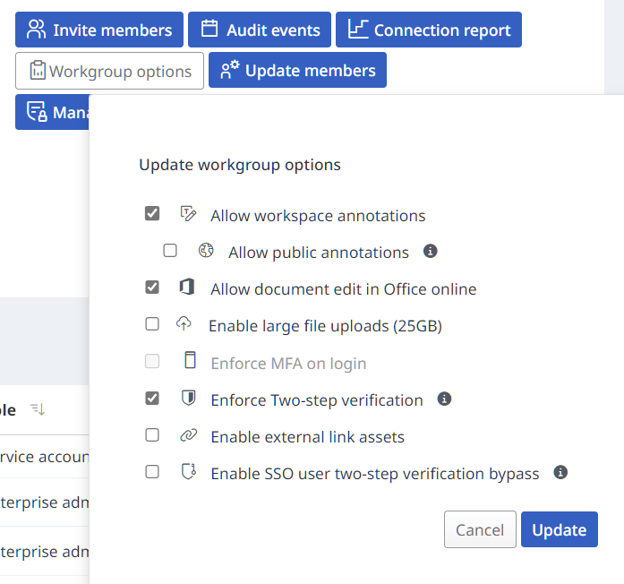
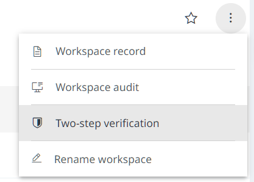

(Note: this is sometimes also referred to as ‘two-step verification’.)
Bypassing 2FA
Where workspaces have two-factor authentication (2FA) enabled, participants won’t be able to use the API unless they have been given permission to bypass 2FA.
To check which participants have permission to bypass 2FA, run
participants() using your workspace UUID, and inspect the
bypass_2fa column in the returned data frame.
To set up 2FA bypassing in your workspace, you’ll need the help of both your workgroup administrator and your workspace owner. There are three main steps to complete this process:
- Give permission to change 2FA bypass settings in the workgroup
- Give permission to the workspace owner
- Give permission to other workspace participants
These steps only need to be carried out once before you can use objr (or the API in general) for the first time.
Before you start, you’ll need the name and UUID for both your workgroup and workspace. More information on how to find these UUIDs can be found on the Getting Started page.
A note for non R users
Some of the required changes can only be made via the API (and not in the Objective Connect browser interface). If the user required to make these changes is not an R user, they can use the API via it’s interactive documentation instead of using objr.
Before using the interactivity, set up API authentication by clicking the the ‘Authorise’ button and entering your Objective Connect username and password.
Links to relevant sections of the interactive documentation will be provided for each step below.
Permission to change 2FA settings in the workgroup
These steps must be completed by a workgroup admin.
If you work in the Scottish Government, please contact the package maintainers to arrange this step.

-
In R, allow 2FA bypassing for the workgroup using
workgroup_bypass_2fa(), providing the relevant workgroup UUID. For example:workgroup_bypass_2fa("v09y-g5vk-5348-k68t-s462-c2vs-7kl8-7440")## ✔ Bypass 2FA setting successfully updated for workgroup.Non R users can use the interactive documentation to allow 2FA bypassing in the workgroup.
Permission for the workspace owner
These steps must be completed by the workspace owner.

-
In R, give yourself (the workspace owner) permission to bypass 2FA using
participant_bypass_2fa(). You will need your participant UUID, which can be found usingparticipants(). For example,participant_bypass_2fa("z98a-9sy0-b3gv-285m-39k6-20d5-dg6k-3gue")## ✔ Bypass 2FA setting successfully updated for participant.Non R users can use the interactive documentation to find the relevant participant UUID and to allow participant 2FA bypassing.
-
Check this has worked using
participants(). Thebypass_2facolumn in the returned data frame should containTRUEagainst your name.Non R users can use the interactive documentation to view participant settings.
Reinstate 2FA for the workspace using the same method as in step 1.
The workgroup admin can now reinstate 2FA enforcing for the workgroup.
Permssion for other participants
These steps must be completed by the workspace owner.
-
In R, give participants permission to bypass 2FA using
participant_bypass_2fa(). You will need the relevant members’ participant UUID, which can be found usingparticipants().Non R users can use the interactive documentation to find the relevant participant UUID and to allow participant 2FA bypassing.
For Scottish Government Objective Connect workspaces, bypassing permissions should be limited to Scottish Government staff and not given to external workspace participants.
If you wish to revoke permissions to bypass 2FA, use
participant_bypass_2fa() and set
allow_bypass = FALSE.
Remember, to check the status of 2FA bypassing for participants in a
workspace, use participants().
Getting more help
This process can be quite fiddly. If you are unsure or have any issues with the above, please contact the package maintainers.